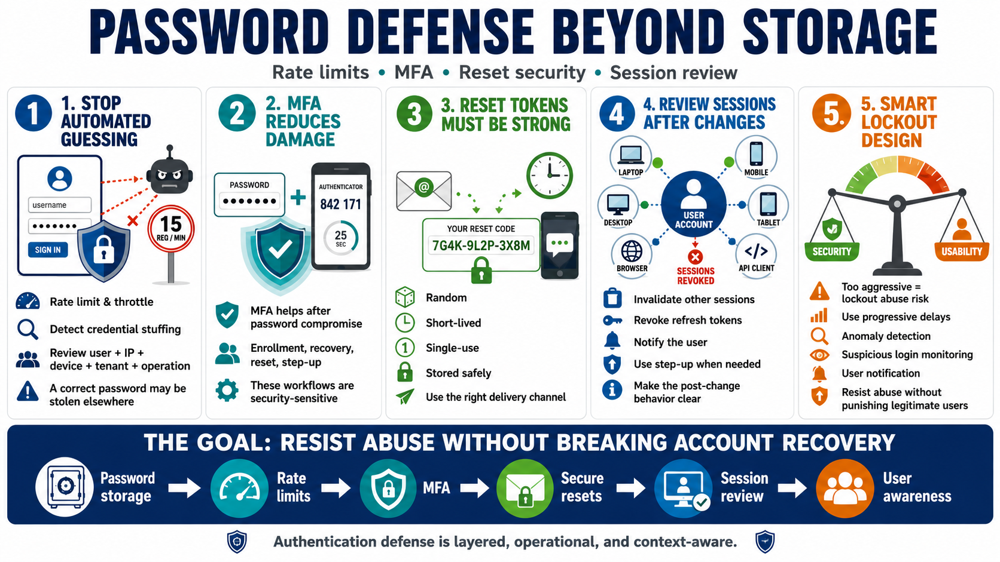

Authentication Flow Defenses
Connecting to LMS... Progress: in progress

Narration
Password storage is only one part of authentication defense. Login endpoints need rate limiting, throttling, and detection for automated guessing and credential stuffing. Credential stuffing uses username and password pairs from one breach against another service. Because users reuse passwords, a correct password may have been stolen elsewhere. Controls should consider user, IP address, device, token, tenant, and operation context rather than relying on a single counter.
Multi-factor authentication can reduce the damage from password compromise, but it should be integrated thoughtfully. MFA enrollment, recovery, reset, and step-up prompts all become security-sensitive workflows. Password reset tokens are also critical. They should be random, short-lived, single-use where practical, stored safely, and delivered through channels appropriate for the risk. A stolen or guessed reset token can allow account takeover.
Sessions should be reviewed after password changes and reset events. In many systems, existing sessions may no longer reflect the user's intended account security state. Invalidation of other sessions, revocation of refresh tokens, notification to the user, and step-up requirements may all be appropriate depending on the situation. The design should be clear enough that users and operators understand what happens after a credential change.
Lockout design needs balance. Aggressive lockouts can protect against guessing, but they can also create denial-of-service risk if attackers can lock many users out. Safer designs often combine rate limits, progressive delays, anomaly detection, MFA, suspicious login monitoring, and user notification. The goal is to resist abuse without making account recovery fragile or punishing legitimate users unnecessarily.